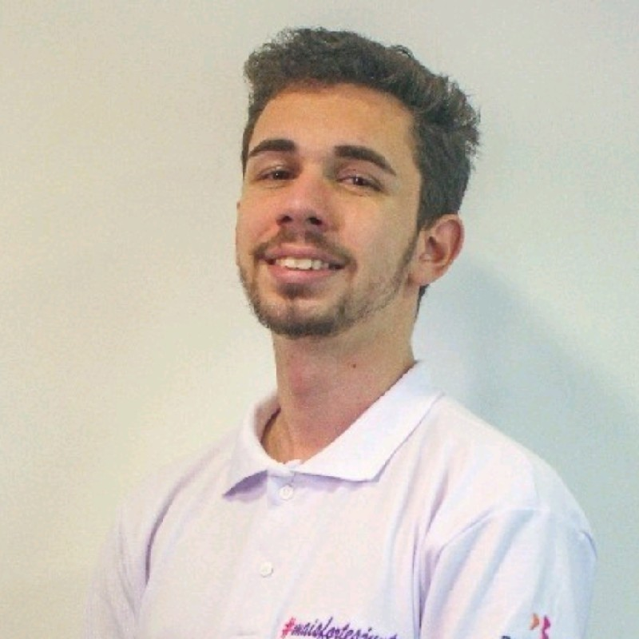

TRANSFORMANDO PROCESSOS COMPLEXOS EM SOLUÇÕES QUE FUNCIONAM .
Atuo com sistemas corporativos, especialmente no Protheus, analisando processos, investigando erros e garantindo o funcionamento de rotinas críticas. Utilizo SQL para explorar dados, identificar inconsistências e apoiar a tomada de decisão. Também tenho contato com BPM (SoftExpert), acompanhando fluxos e automações que sustentam o negócio. Meu foco atual é evoluir unindo dados, sistemas e processos para entregar soluções cada vez mais eficientes.

COMO EU GERO VALOR.
Interfaces que Resolvem, Não Só Impressionam
Não desenvolvo apenas telas — construo interfaces que facilitam decisões e reduzem fricção no dia a dia do usuário. Meu foco está em transformar processos complexos em experiências simples, diretas e eficientes. Utilizando HTML, CSS e JavaScript, crio soluções que se conectam com sistemas reais de negócio, sempre priorizando clareza, performance e usabilidade. Cada detalhe é pensado para que o usuário não precise pensar duas vezes: ele simplesmente usa e resolve.
Dados que Explicam, Não Confundem
Trabalho com dados indo além do básico: investigo, cruzo informações e encontro respostas onde muitos veem apenas tabelas. Com SQL, atuo diretamente na análise de cenários, identificação de inconsistências e construção de consultas que trazem clareza para o negócio. Minha experiência com ambientes corporativos me permite entender o contexto por trás dos dados, transformando informação bruta em algo confiável e útil para tomada de decisão.
Sistemas que Funcionam, Mesmo Quando Ninguém Vê
Grande parte do meu trabalho acontece nos bastidores, garantindo que sistemas operem com estabilidade e que os dados façam sentido do início ao fim. Atuo diretamente com ambientes corporativos como Protheus, analisando falhas, acompanhando rotinas automatizadas e apoiando usuários em situações críticas. Tenho como prioridade manter a integridade das informações e a continuidade das operações, porque no fim, um sistema só é bom quando funciona — todos os dias.
MUITO PRAZER, SOU O YURI SOUSA.
Atuo com sistemas corporativos, com foco em análise de processos, dados e suporte técnico em ambientes como Protheus. No meu dia a dia, trabalho investigando erros, entendendo regras de negócio e garantindo que operações críticas funcionem da forma correta.
Minha trajetória é guiada pela evolução constante: utilizo SQL como ferramenta de análise, tenho contato com BPM (SoftExpert) e estou sempre buscando aprofundar meu entendimento entre tecnologia e negócio. Mais do que aprender, meu foco é gerar valor real, resolvendo problemas e contribuindo diretamente para a eficiência dos processos.